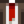

Ancient Seed
| Ancient Seed | |
| It's a dry old seed from some ancient plant. By all appearances it's long since dead... | |
| Information | |
| Artifact Spots: |
|
| Monster Drops: | |
| Other Sources: | |
| Donation Reward: |
|
| Sell Price: | |
- This article is about the artifact. For the fruit seed, see Ancient Seeds.
The Ancient Seed is an Artifact that can be found by digging up an Artifact Spot in Cindersap Forest or The Mountain (including the Quarry), or obtained inside Artifact Troves, or Fishing Treasure Chests after reaching Fishing level 2. It can be dropped from Bugs, Grubs, Cave Flies, Mutant Flies, and Mutant Grubs (0.5% chance). It can also be found by cutting foliage on Prehistoric Floors, in The Mines when they are in a "Dangerous" state, or in the Volcano Dungeon[1]. Placing a packet of Ancient Seeds in a Deconstructor yields an Ancient Seed.
This artifact can be crafted into viable seeds that can be planted to grow Ancient Fruit during Spring, Summer and Fall, or during any season in the Greenhouse or the Ginger Island farm.
Donation
The only productive use of the first Ancient Seed artifact found is to donate it to the Museum. The item contributes to the total count of Museum donations. Gunther will reward the player with one pack of plantable Ancient Seeds and the recipe to craft any further Ancient Seed artifacts into more seeds.
Gifting
| Villager Reactions
| |
|---|---|
| Like | |
| Dislike | |
Bundles
Ancient Seed is not used in any bundles.
Recipes
| Image | Name | Description | Ingredients | Recipe From |
|---|---|---|---|---|
| Ancient Seeds | Could these still grow? | Donating Ancient Seed to the Museum |
Tailoring
Ancient Seed is used in the spool of the Sewing Machine to create the 
Quests
Ancient Seed is not used in any quests.
References
- ↑ See StardewValley.TerrainFeatures.CosmeticPlant::performtoolaction in the game code.
History
- 1.0: Introduced.
- 1.4: Updated sprite, added Artifact Trove as a source. Can now be used in Tailoring.
- 1.5: Artifacts are now liked by the Dwarf and Penny, disliked by all other NPCs.